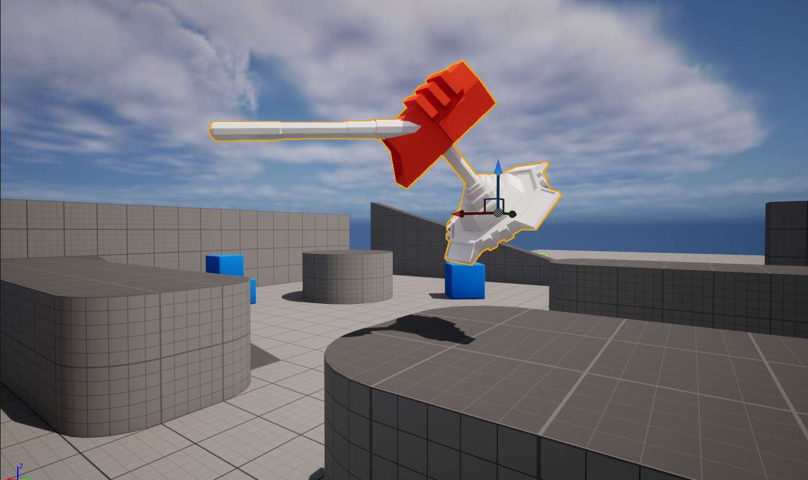
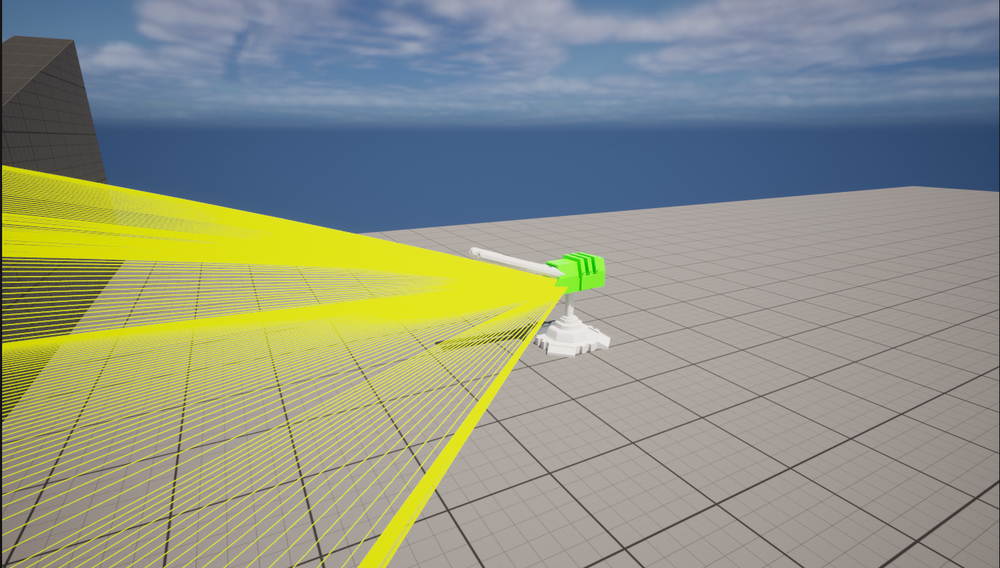
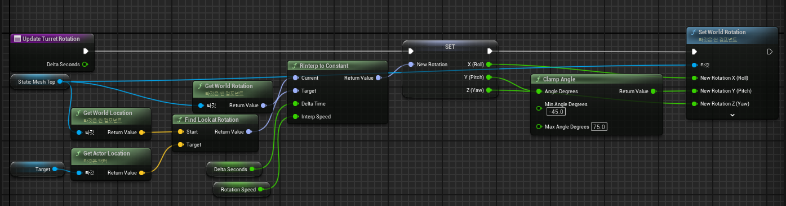
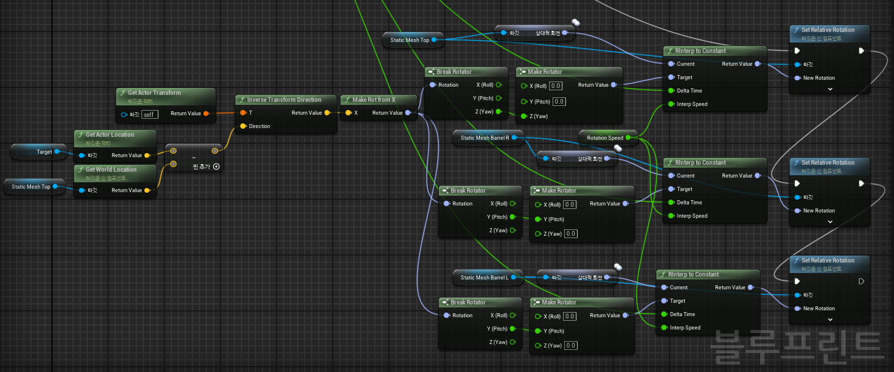
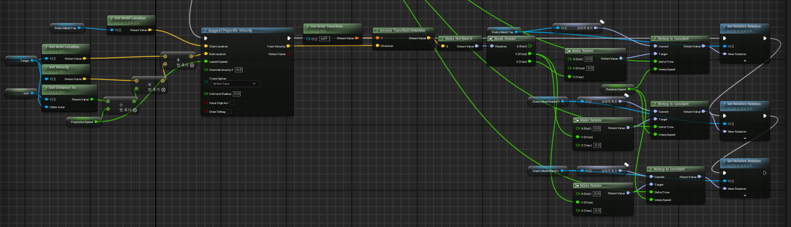
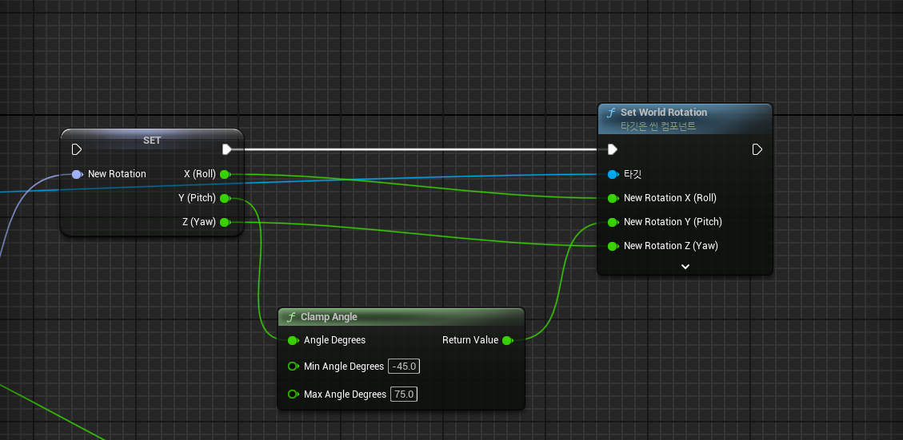

Turret System
Unreal Engine에서 Yaw와 Pitch를 분리한 포탑 조준 및 탄도 예측 시스템 구현



Turret Aiming System
부가 장비를 장착하기에 앞서 전차나 자주포와 같은 구조의 조준 정렬 기능을 구현하기 위해 간단한 터렛 시스템을 제작했습니다.
기본적인 터렛의 형태와 조준 방식은 Unreal Engine 튜토리얼 영상을 참고하여 구현했으며, 이후 실제 포탑과 유사하게 동작하도록 Yaw와 Pitch를 각각 분리하는 구조로 개선했습니다.
단순히 하나의 액터 전체를 회전시키는 방식에서 벗어나 포탑은 수평 회전(Yaw)을 담당하고, 포신은 수직 회전(Pitch)을 담당하도록 구조를 분리하는 것이 이번 구현의 핵심이었습니다.
Initial Turret Implementation
처음에는 포탑과 포신을 하나의 계층 구조로 구성하고 타겟을 바라보도록 회전시키는 기본적인 터렛을 제작했습니다.
이 방식은 구현 자체는 간단하지만 Yaw와 Pitch가 모두 포탑 전체에 적용된다는 문제가 있었습니다.
실제 전차나 자주포의 경우 포탑은 수평 방향으로 회전하고, 포신은 포탑을 기준으로 위아래로 움직입니다. 따라서 실제 구조와 유사하게 만들기 위해 회전 축을 분리할 필요가 있었습니다.

Separating Yaw and Pitch
포탑과 포신을 분리한 이후 가장 중요했던 부분은 월드 좌표계와 로컬 좌표계를 구분하는 것이었습니다.
타겟의 위치는 월드 좌표계에서 가져오지만, 포탑과 포신은 자신이 가지고 있는 로컬 좌표계를 기준으로 회전해야 합니다.
포탑 자체가 기울어져 있거나 다른 방향으로 배치되어 있는 상황에서 월드 좌표를 그대로 사용하면 포탑이 의도하지 않은 방향으로 회전할 수 있습니다.
이를 해결하기 위해 Get Actor Transform과 Inverse Transform Direction을 사용하여 월드 방향 벡터를 포탑 기준의 로컬 방향으로 변환했습니다.
Target Location
↓
Get Actor Transform
↓
Inverse Transform Direction
↓
Make Rot from X
↓
Break Rotator
↓
Yaw → Turret
Pitch → Barrel
Turret Yaw / Barrel Pitch
로컬 좌표계 기준의 방향을 Make Rot from X를 통해 Rotator로 변환한 뒤, 해당 Rotator를 분해했습니다.
이후 포탑에는 Yaw 값을 적용하고, 포신에는 Pitch 값을 적용했습니다.
결과적으로 포탑은 몸체와 평행한 상태를 유지하면서 좌우 방향으로 회전하고, 포신은 포탑을 기준으로 위아래를 조절하여 타겟을 정확하게 조준할 수 있게 되었습니다.

Projectile Prediction
포탑의 방향은 정상적으로 타겟을 향하도록 만들었지만 새로운 문제가 발생했습니다. 포탄에 중력이 적용되기 때문에 포신이 타겟을 정확히 바라보고 있어도 실제 탄환은 타겟에 도달하지 못했습니다.
사용한 발사체는 BP_FirstPersonProjectile이며, 초기 속도는 3000으로 설정하고 중력의 영향을 받도록 구성했습니다.
이 문제를 해결하기 위해 Unreal Engine에서 제공하는 Suggest Projectile Velocity 함수를 사용했습니다.
해당 함수는 시작 위치와 목표 위치를 기반으로 중력을 고려한 발사 속도 벡터를 계산할 수 있기 때문에 포탑이 목표 지점에 탄을 발사할 수 있도록 활용할 수 있습니다.
Suggest vs Predict
Unreal Engine에는 탄도와 관련된 Predict Projectile Path 함수도 존재합니다.
Predict Projectile Path는 시작 위치와 발사 속도 벡터를 이용해 일정 시간 동안 발사체가 어떻게 이동하는지 예측하는 데 적합합니다.
반면 이번 구현에서는 출발점과 도착점을 알고 있는 상태에서 필요한 발사 속도를 계산 해야 했기 때문에 Suggest Projectile Velocity를 선택했습니다.

Predicting Target Movement
정지해 있는 타겟을 조준하는 것뿐만 아니라 움직이는 타겟을 사격하기 위해서는 탄이 도착할 시점의 타겟 위치를 미리 계산해야 합니다.
이를 위해 타겟의 현재 위치와 이동 속도, 발사 위치와 타겟 사이의 거리, 그리고 탄속을 이용하여 예상 도착 위치를 계산했습니다.
Predicted Target Location =
Target Location + (Target Velocity × Distance / Projectile Speed)
계산된 위치를 End Location으로 사용하면 움직이는 타겟의 예상 위치를 향해 포탄을 발사할 수 있습니다.
Converting Projectile Velocity
Suggest Projectile Velocity의 결과값인 TossVelocity는 월드 좌표계를 기준으로 반환됩니다.
따라서 앞서 조준 방향을 계산할 때와 마찬가지로 Inverse Transform Direction을 사용하여 포탑 기준의 로컬 방향으로 변환했습니다.
이후 Make Rot from X를 통해 해당 방향 벡터를 회전값으로 변환하고, 포탑에는 Yaw를, 포신에는 Pitch를 적용했습니다.
TossVelocity
↓
Inverse Transform Direction
↓
Make Rot from X
↓
Break Rotator
↓
Yaw → Turret
Pitch → Barrel
Limiting Turret Rotation
마지막으로 포탑이 모든 방향으로 회전하거나 포신이 포탑의 구조물을 뚫고 지나가는 문제를 방지하기 위해 회전 범위를 제한했습니다.
Unreal Engine의 Clamp Angle을 이용하여 Yaw와 Pitch에 각각 최소값과 최대값을 지정했습니다.
이를 통해 고정식 포탑의 경우 특정 방향으로만 회전하도록 제한하거나, 포신이 허용된 범위를 벗어나지 않도록 제어할 수 있습니다.

What I Learned
Local Space
월드 좌표와 로컬 좌표의 차이를 이해하고 액터의 방향에 맞춰 회전값을 계산하는 방법을 익혔습니다.
Rotation Separation
하나의 회전값을 사용하는 대신 포탑의 Yaw와 포신의 Pitch를 분리하여 실제 장비와 유사한 구조를 구현했습니다.
Projectile Prediction
중력이 적용되는 발사체의 궤도를 고려하여 목표 지점에 도달하기 위한 발사 속도를 계산했습니다.
Target Leading
타겟의 이동 속도를 이용해 미래 위치를 예측하고 이동하는 타겟을 조준하는 구조를 구현했습니다.
Turret System Summary
이번 터렛 구현은 단순히 타겟을 바라보는 회전 기능을 만드는 것에서 시작하여, 좌표계 변환 → Yaw/Pitch 분리 → 탄도 계산 → 이동 타겟 예측 → 회전 범위 제한 까지 단계적으로 기능을 확장했습니다.
특히 월드 좌표계와 로컬 좌표계를 올바르게 구분하는 것이 터렛 시스템을 구현하는 데 핵심이라는 것을 확인했습니다.
또한 Unreal Engine에서 직접 기능을 구현하기 전에 Suggest Projectile Velocity와 같은 엔진 기본 함수를 먼저 확인하는 것이 개발 시간을 줄이고 안정적인 결과를 얻는 데 도움이 된다는 점도 경험했습니다.
이후에는 이 구조를 기반으로 실제 전차나 자주포와 유사한 회전 제한, 발사 위치 보정, 탄약 시스템 및 추가 장비와 연동할 수 있도록 확장할 수 있습니다.